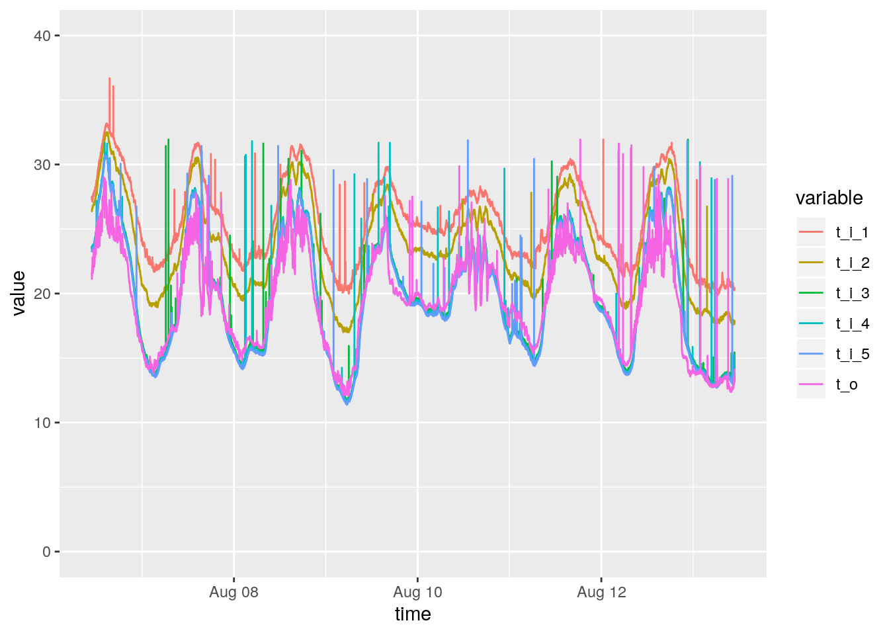

11 Plotting
11.1 Standard library
# subset data
df.4 <- df[df$hive==4,]
# plot temperature outside
plot(df.4$time, df.4$t_o, ylim=c(0,40),type = 'p', pch=4)
# choose colours
cl <- rainbow(5)
# choose colums
cols <- 4:8
# plot each column
for (i in 1:5){
lines(df.4$time, df.4[,cols[i]],col = cl[i],type = 'p', pch=4, ylim=c(0,40))
}
# add legend
legend("topright", legend=c(1, 2, 3, 4, 5, "outside"),
col=c(cl, "black"), pch = 4, lty = 0, cex=0.8)11.1.1 Points or Lines? (type)
- “p”: Points
- “l”: Lines
- “b”: Both
11.1.2 Line type (lty)

Source: http://www.sthda.com/english/wiki/line-types-in-r-lty
### Point types (pch)

Source: http://www.sthda.com/english/wiki/r-plot-pch-symbols-the-different-point-shapes-available-in-r
11.2 ggplot
# subset data
df.4 <- df[df$hive==4,]
# choose columns
df.4.cols <- df.4[,c(1,4:9)]
# reshape data
library(reshape)##
## Attaching package: 'reshape'## The following object is masked from 'package:lubridate':
##
## stampmdf <- melt(df.4.cols, id=c("time"))
# plot data
library(ggplot2)
ggplot(data = mdf, aes(x=time, y=value)) + geom_line(aes(colour=variable)) + ylim(c(0, 40))